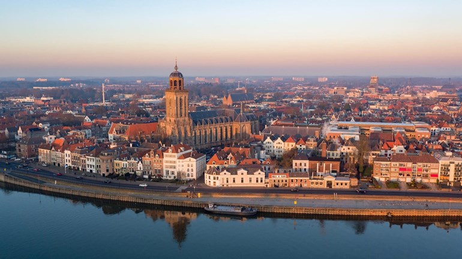

Deventer(Dutch pronunciation: [ˈdeːvəntər] (About this soundlisten); Sallaans: Daeventer) is a city and municipality in the Salland region of the province of Overijssel, Netherlands. In 2017, Deventer had a population of 99,577. The city is largely situated on the east bank of the river IJssel, but also has a small part of its territory on the west bank.
